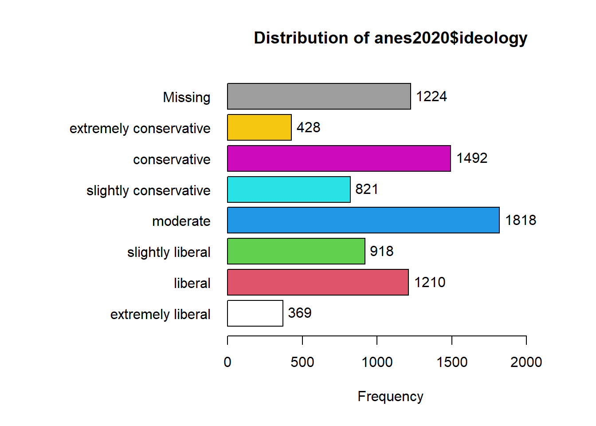

Chapter 4 Recoding and comparing values of variables
4.1 Getting started with this chapter
To get started in today’s chapter, open the project that you made in lab 1. If you forgot how to do this, see the instructions in section 2.2.
We are going to install three new packages to use today. One is called “epiDisplay” and the other is called “Hmisc.” Enter these two commands into your Console one by one:
install.packages("Hmisc")
install.packages("tigerstats")Now, open a new script file and save it in your scripts folder as “chapter 4 practice.” Copy and paste this onto the page (updating the text so that it is about you):
####################################
# Your name
# 20093 Chapter 4, Practice exercises
# Date started : Date last modified
####################################
#libraries------------------------------------------
library(tidyverse)
library(epiDisplay) #the tab1 command helps us make nice frequency tables
library(Hmisc) #the cut2 command helps us simplify interval variables
library(tigerstats) #colPerc can also be useful with crosstabs Now select all the text on this page, run it, and save it.
4.2 Recoding ordinal and nominal variables
There are times that you will want to change the values of variables. Perhaps you are interested in one particular value of a key variable (such as married people, or high-income countries). Perhaps your variable has some values which you would like to treat as missing. Or, perhaps you will want to simplify a variable, or change a variable from character to numeric or vice versa. When doing so, you will have two powerful allies: the mutate() command and the recode() command, both available through the tidyverse package.
To start, let’s take a look at the ideology variable in the anes2020 dataset. We can use the tab1() command that we learned last lesson to look at how the values are distributed, running this command
tab1(anes2020$ideology)
## anes2020$ideology :
## Frequency %(NA+) %(NA-)
## extremely liberal 369 4.5 5.2
## liberal 1210 14.6 17.1
## slightly liberal 918 11.1 13.0
## moderate 1818 22.0 25.8
## slightly conservative 821 9.9 11.6
## conservative 1492 18.0 21.1
## extremely conservative 428 5.2 6.1
## NA's 1224 14.8 0.0
## Total 8280 100.0 100.0Looking at this output, we can see that there are seven possible values (excluding the NAs), ranging from “extremely liberal” to “extremely conservative.” There are times when we might want all of this detail, and we should not throw away data. However, we will often just want to compare liberals, moderates, and conservatives. To simplify this variable, we will first tell R to make a new version of the ANES dataframe that will house our new variable. Then, we will use mutate and recode to give values for our new variable. Here is what the code will look like:
anes2020<-anes2020 %>%
mutate(ideology3=recode(ideology, 'extremely liberal'="liberal",'liberal'=
"liberal",'slightly liberal'="liberal",
'slightly conservative'="conservative",
'conservative'="conservative",
'extremely conservative'="conservative")) There is a lot going on in the above command, so let’s try to break it down:
POST OPERATION DATAFRAME<-PRE OPERATION DATAFRAME %>%
mutate(NEW VARIABLE NAME=recode(OLD VARIABLE NAME, ‘OLD VARIABLE VALUE #1’="NEW VARIABLE VALUE #1", ‘OLD VARIABLE VALUE #2’="NEW VARIABLE VALUE #2",…)) Using mutate and recode together, we are generating a new version of our dataframe that has a new variable whose values are based on another variable. I have an important piece of advice when using this kind of command: be sure to copy and paste variable names and values from your Console screen to your script file, because it is very easy to make a typographical error when transcribing variable names and values. Even if you are careful, there will be times when you make an error in your code and R sends you an error message. Most of the time, you will be able to quickly figure out the source of your error, but if you ever cannot, please feel free to ask your instructor! Sometimes, you will realize that your error modified the dataframe in ways that you don’t like. In that case, you can go back to the original dataframe. If you were using anes2020, you can use this command to restore that dataframe:
load("Data/anes2020.Rda") Or, if that command doesn’t work for you, you can follow the instructions in section 1.5 to reload the original dataframe.
To confirm that our recode worked, we can run “table” on both our old and our new variable, like this:
table(anes2020$ideology)##
## extremely liberal liberal slightly liberal moderate slightly conservative
## 369 1210 918 1818 821
## conservative extremely conservative
## 1492 428table(anes2020$ideology3)##
## liberal moderate conservative
## 2497 1818 2741When we compare these two tables, we can see that our recoding worked. We have 1818 moderates in each variable variable. And, if we add the numbers of extremely liberal, liberal, and slightly liberal respondents (which we can do in R!), we can see that 369+1210+918=2497. The same is also true with the conservatives.
What if we were interested in examining the horseshoe theory – that people on the extremely left and extreme right have some major things in common? In that case, we might want to generate a new variable which measures whether or not someone is an extremist. To do that, we could do another version of the mutate/recode command like we did above. But that would require us to type all seven values of our original variable into our code again, which takes a little while. Instead, we could also use the “.default” qualifier to tell R: assign this value to all other cases. Here is how that code would look:
anes2020<-anes2020 %>%
mutate(extremist=recode(ideology, 'extremely liberal'="extremist",
'extremely conservative'="extremist",
.default="not extremist"))Now, when we run the command:
table(anes2020$extremist)##
## extremist not extremist
## 797 6259we can see that we successfully created our new variable.
4.3 Dealing with variables coded 0/1
When looking at data in the real world, we will often find variables coded with only two possible values – 0 or 1. These variables are sometimes called dummy variables or binary variables. In general, these variables are used to mean the presence or absence of some characteristic. For example, either someone is married (1), or they are not (0). Either a country is a democracy (1) or it is not (0). On the anes2020 dataframe, I have coded the variable sex in this way. If you refer to the codebook, you can see that 0 means male and 1 means female. It will be useful mathematically to have it coded this way in future labs. But it will be less useful when generating graphics, since the “1” and “0”s produced on the axis and in the legends will not be that informative. So, we may want to generate a second “sex” variable that uses words instead of numbers. We can do so with this code:
anes2020<-anes2020 %>%
mutate(sex2=recode(sex, '1'="female",'0'="male"))We can check our results with this code (we could also use tab1 instead of table here):
table(anes2020$sex)##
## 0 1
## 3763 4450table(anes2020$sex2)##
## female male
## 4450 37634.4 Simplifying interval variables
Interval variables give us a lot of information, and it is sometimes too much! For example, we might want to generate a graph comparing age groups, rather than a graph of individuals at each age between 18 and 80. This is where the cut2() command from the Hmisc package can come in handy. Let’s say we want to create three roughly evenly distributed age groups. We can use cut2 like this:
anes2020$age3<-cut2(anes2020$age, g=3)The g=3 is telling R to divide age into three roughly equal groups and make them into a new variable called age3. If we wanted 4 groups, or 2 groups, or 5 groups, we could just change that number. Now let’s run table() on our new variable:
table(anes2020$age3)##
## [18,42) [42,63) [63,80]
## 2674 2705 2553This output is telling us that our new variable has three values—[18,42), [42,63), and [63,80]. This notation means that the first group has 18-year-olds to those younger than 42 (that is what the “)” means), the second group has 42-year-olds to those younger than 63 (again, we learn this from the closed parenthesis), and the third group has 63-year-olds and older. We could use mutate(recode()) on those value names, like we did above, but here is an easier solution. The cut2 command generates an ordered factor, which is how R likes to treat ordinal variables. Ordered factors in R have “levels” that are always displayed in the same order (it might be helpful to think of them as going from low to high). To see the levels of our new variable, we can use this command:
levels(anes2020$age3)## [1] "[18,42)" "[42,63)" "[63,80]"This output means that [18,42) is the “low” level of the new age3 variable, [42,63) is the medium level, and [63,80] is the high level. To rename those variables, we can just make a list using the c() command that we learned in lab 1, like this:
levels(anes2020$age3)<-c("young", "middle aged", "old")When we run that command, R renames the levels of our age3 variable. When renaming the levels of a variable, be sure to list the new levels in an order that corresponds with the old levels of the variable. If you typed “old” first, in the command below, you would be telling R to call people from 18-42 old, and you would also make “old” the lowest level of your age3 variable.
To confirm that this worked, you can type
table(anes2020$age3)and you should see your new labels.
4.5 Cross-tabulation tables
Up until now, we have focused on single variables at a time. This is an essential component of social scientific analysis. However, many (perhaps most?) of the questions that we are interested in are about the relationship between two or more variables. Most of the rest of the new work that we will do in R from this point forward will be geared toward helping us to make observations and inferences about the relationship between more than one variable.
One way that we can start to examine the relationship between more than one variable is by making cross-tabulation tables (often called crosstabs). These are essentially two frequency tables presented in a table. Crosstabs are most useful when looking at the relationship between an ordinal or nominal variable and another ordinal or nominal variable. For example, let’s look at the relationship between education and income in the anes2020 dataframe. We can hypothesize that people with more education will make more income. To test this, we can first use the xtabs() command, like this:
xtabs(~income+edu, data=anes2020)## edu
## income less than high school high school some college associate degree ba ma md, phd, or jd
## under $24,999 160 409 390 208 221 96 31
## $25,000-64,999 122 442 569 364 490 190 50
## $65,000-$109,999 40 255 346 277 550 329 96
## $110,000 or more 22 130 270 180 652 480 203Let’s break down how we used this command: we put the dependent variable, income, first, and then the independent variable, edu, second. Crosstabs generally have the independent variable in columns and the dependent variable in rows. This setup lets us to that.
The output that our command generated is a basic crosstab. It tells us that 160 people with less than a high school education make under $24,999 per year, 122 people with less than a high school education make $25,000-64,999, etc. Now we might be tempted to look at this and say: “Graduate school is a waste of time! Only 203 people from our sample with MDs, PhDs, and JDs make $110,000 or more, while 270 people with some college education make $110,000 or more.” However, that would be a mistake! To understand why, we should look at the column totals from our crosstab, which we can produce with this command:
addmargins(xtabs(~income+edu, data=anes2020)) ## edu
## income less than high school high school some college associate degree ba ma md, phd, or jd Sum
## under $24,999 160 409 390 208 221 96 31 1515
## $25,000-64,999 122 442 569 364 490 190 50 2227
## $65,000-$109,999 40 255 346 277 550 329 96 1893
## $110,000 or more 22 130 270 180 652 480 203 1937
## Sum 344 1236 1575 1029 1913 1095 380 7572Take a look at those column totals. Our anes2020 dataframe has 380 people that got MAs, PhDs, or JDs, while it has 1575 people that have some college. So, returning to those two numbers from above, the 203 MDs, PhDs, and JDs in the highest salary category make up 53.4% of all of the MDs, PhDs, and JDs in our sample (because 203/380=.534), while the 270 people with some college making the highest salary category make up only 17.1% of all of the people with some college in our sample (because 270/1575=.171).
Thus, when interpreting crosstabs it is important to look at the column percents, and not just the raw numbers. To make R generate all of the column percents in a crosstab at the same time, we can use the colPerc() command from the tigerstats package that we installed for today. We can enter this command:
colPerc(xtabs(~income+edu, data=anes2020))## edu
## income less than high school high school some college associate degree ba ma md, phd, or jd
## under $24,999 46.51 33.09 24.76 20.21 11.55 8.77 8.16
## $25,000-64,999 35.47 35.76 36.13 35.37 25.61 17.35 13.16
## $65,000-$109,999 11.63 20.63 21.97 26.92 28.75 30.05 25.26
## $110,000 or more 6.40 10.52 17.14 17.49 34.08 43.84 53.42
## Total 100.00 100.00 100.00 100.00 100.00 100.00 100.00Remember when interpreting this output that the numbers are now the column percents, not the raw numbers. If you take a look at this output, you will see that people with more education seem to make more money.
4.6 Mean comparison tables
Crosstabs are useful when we have two nominal or ordinal variables. But what if we want to look at the relationship between a nominal or ordinal variable and an interval variable? In that case, a mean comparison table can be helpful. The tidyverse has some commands that we can use to generate such a table. To demonstrate, let’s look at our states2010 dataframe, and the relationship between the region variable and the evangelical_pop variable (which measure the percentage of the population of a state that identifies as evangelical). The first thing that we need to learn is the group_by() command. This tells R: “make groups based on the variable that we tell you.” In our case, we want to make groups based on our independent variable (which, for now, must be ordinal or nominal). Once we have done that, we can use the summarise() command to get the mean. For good measure, we can also use the summarise() command to calculate the standard deviation as well as the size of each group. Here is what that command looks like:
states2010 %>%
group_by(region) %>%
summarise(mean=mean(evangelical_pop), sd=sd(evangelical_pop), n=n())## # A tibble: 4 x 4
## region mean sd n
## <chr> <dbl> <dbl> <int>
## 1 midwest 16.2 4.00 12
## 2 northeast 4.86 1.67 9
## 3 south NA NA 17
## 4 west 22.3 16.2 13We can see mean Midwest state has 16.2% of its population that is evangelical (with a standard deviation of 4), while the mean population in the Northeast has 4.86% of its population that is evangelical (with a standard deviation of 1.67). The reason that the South is NA is because there is a Southern state for which we do not have data on the evangelical_pop data (it happens to be the District of Columbia, not technically a state). To filter out states without data on that variable, we can add another line to our command: filter(!is.na(evangelical_pop))%>% (we used a version of this command in section 3.2.1). Our new command looks like this:
states2010 %>%
filter(!is.na(evangelical_pop)) %>%
group_by(region) %>%
summarise(mean=mean(evangelical_pop), sd=sd(evangelical_pop), n=n())## # A tibble: 4 x 4
## region mean sd n
## <chr> <dbl> <dbl> <int>
## 1 midwest 16.2 4.00 12
## 2 northeast 4.86 1.67 9
## 3 south 28.1 11.2 16
## 4 west 22.3 16.2 13Now we can see that, perhaps not surprisingly, that regions appear to differ a lot in the percentage of evangelicals living in a typical state.
4.7 Review of this chapter’s commands
| Command | Purpose | Library |
|---|---|---|
| mutate(recode()) | A set of commands to rename the values of variables. | dplyr (tidyverse) |
| cut2() | Turn an interval variable into an ordinal variable. Remember to specify “g=” to tell R how many groups to split your variable into. | Hmisc |
| levels() | You can use this command to see the levels of an ordered factor, or you can also use it to assign new levels to an ordered factor, like this: levels(df$variable<-c(“new level1”,“new level2”,…) | Base R |
| xtabs() | Makes a crosstab table with raw values. Remember to define variables like this: xtabs(~DV+IV, data=DATAFRAME) | Base R |
| addmargins(xtabs()) | Makes a crosstab table with row and column totals. | Base R |
| colPerc(xtabs()) | Makes a crosstab table with column percents. Useful for making comparisons. | tigerstats |
| group_by() | A dplyr command that is useful when summarizing a dataframe according to a nominal or ordinal variable. Usually used with the “pipe” (%>%). | dplyr (tidyverse) |
| summarise() | A dplyr command that is useful when summarizing a dataframe according to a nominal or ordinal variable. Usually used with the “pipe” (%>%). | dplyr (tidyverse) |
4.8 Review exercises
Let’s practice some of the things that we learned in this chapter.
- Create a new R script called “Chapter 4 Exercises,” and save it to your R scripts folder. Make a header for the script based on the description from section 2.3. Use the library() command to load the tidyverse, Hmisc, and tigerstats libraries.
- Choose an interval variable from either anes2020, states2010, or world that you are interested in thinking about as a dependent variable (don’t choose one of the variables that we used as an example in this chapter) Generate an appropriate graph and calculate the relevant statistics to make observations about this variable’s central tendency and dispersion. Create a new file in your word processor, and paste your graph in. Also list all relevant statistics to help you make observations about this variable’s central tendency and dispersion.
- Use the cut2() command from tigerstats to make the variable from question 2 into an ordinal variable with between two and five groups. Use the table() command to make sure that the values of your new variable make sense.
- Use the levels()<-c() commands to rename the values of the variable that you created in question 2 so that they will make sense when they show up on tables and in graphs. Use the table() command to make sure that your renaming worked.
- Choose another variable from the same dataset that you want to use as an independent variable. If your variable is nominal or ordinal, it must have more than two possible values. In your word processor file, briefly (in 1-4 sentences) discuss a hypothesis about the relationship between your independent and dependent and dependent variable. What do you expect to see and why?
- Using cut2(), mutate(recode()), and/or levels()<-c() recode your independent variable so that it will be easier to interpret. If your variable was interval, you should turn it into an ordinal variable. If it was already ordinal or nominal, you should turn it into a simpler nominal or ordinal variable.
- Using xtab() and colPerc(), generate a crosstab with the variable that you generated in question 4 and the variable that you generated in question 6.
- In your word processor file, briefly (in 1-4 sentences) discuss what you can conclude about your hypothesis from question 5, referring specifically to some of the percents from the colPerc() crosstab in your answer.
- Using group_by() and summarise(), generate a mean comparison table, grouping by the variable that you generated in question 6, and calculating the mean of the interval variable from question 2.
- In your word processor file, interpret your mean comparison table in 1-4 sentences, referring to some of the specific means. If this table suggests a different conclusion from your crosstab, discuss why this might be the case.